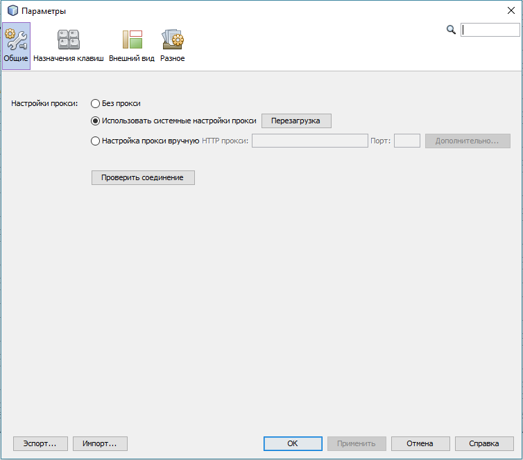
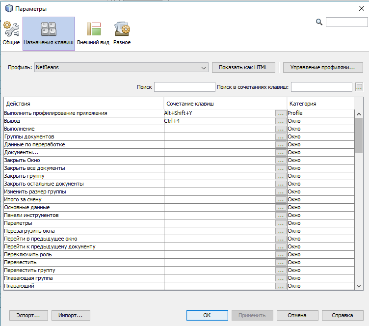
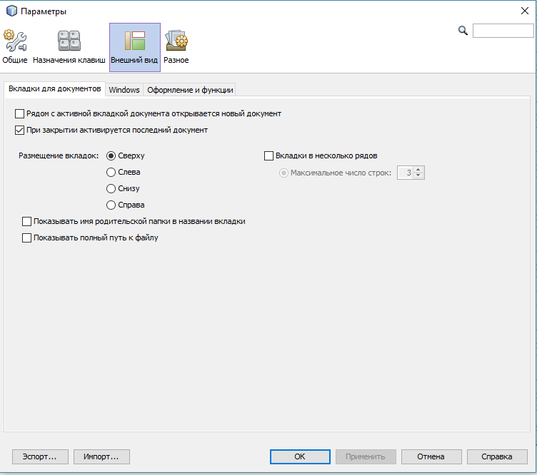
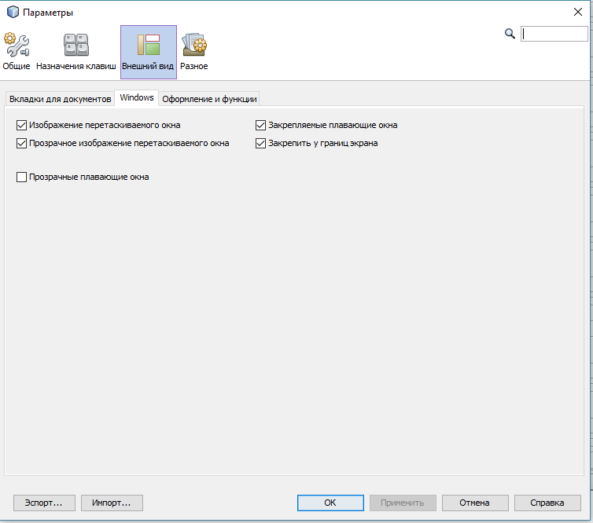
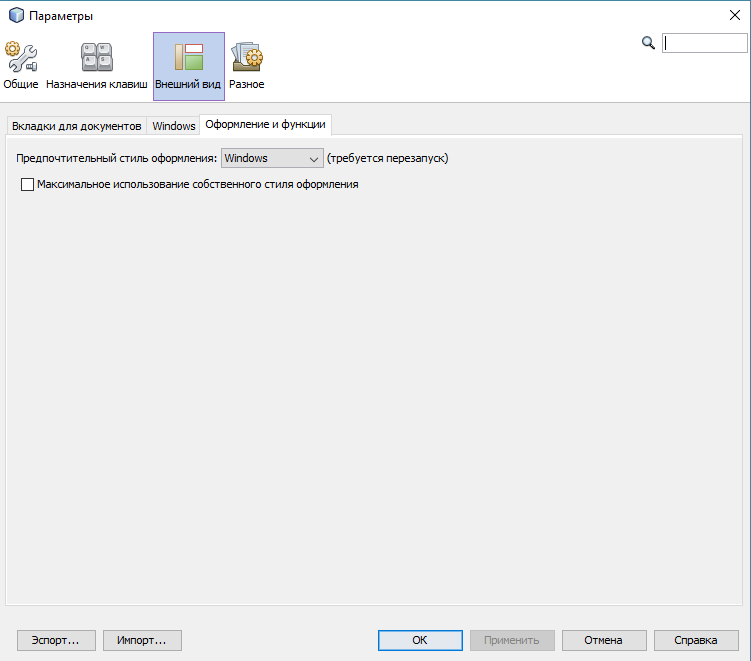
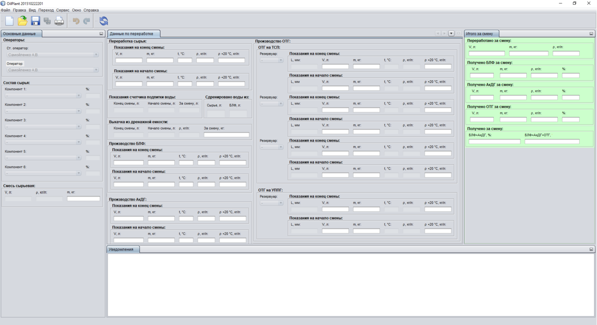
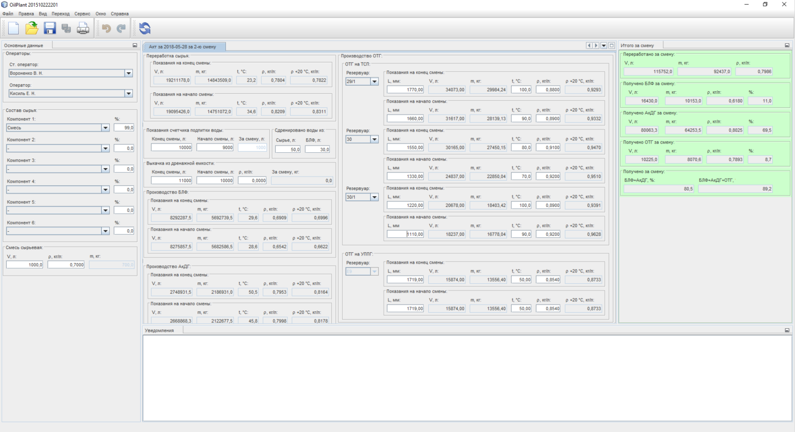

Описание диалогового окна "Параметры"
Диалоговое окно "Параметры"
предназначено для осуществления различных настроек приложения.
При помощи данного диалогового окна можно настроить внешний вид приложения и некоторые настройки приложения, связанные с его работой.
Диалоговое окно "Параметры"
состоит из следующих вкладок:
Общие

Предназначено для настройки соединения приложения с сетью Интернет.
Менять эти настройки не системному администратору строго запрещено
Назначения клавиш

Предназначено для настройки клавиш быстрого доступа к вызову действий или операций.
Например, можно закрепить различные сочетания клавиш для операций создания, открытия, сохранения, печати или обновления акта.
Рекомендуется осуществлять данные настройки системному администратору.
Внешний вид
Данная вкладка содержит три дочерние владки:
Вкладки для документов

Предназначена для настройки расположения вкладок панелей и документов.
Windows

Предназначена для настройки оформления и поведения окон.
Оформление и функции

Предназначена для настройки внешнего вида приложения. Например, выбрав стиль оформления Nimbus
, приложение примет следующий вид:

Если выбрать стиль оформления Metal
, приложение будет выглядеть следующим образом:

Разное
Связь
Справка о диалоговом окне "Параметры"
приведена в ознакомительных целях.
Выполнять операции с данным диалоговым окном не системному администратору категорически запрещается!!!
В противном случае может быть нарушена работоспособность приложения!!!